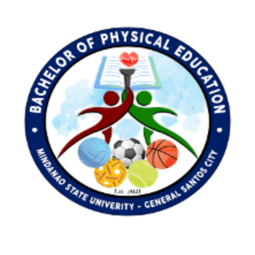

2026Experimental Study
Effectiveness of a 5-Week High-Intensity Interval Training on Endurance Capacities and BMI Reduction Among Overweight Female Student-Athletes
Pedagogy of Physical Culture and Sports, 30(2), 111–120.
Published ArticleCelebrating Batch Maragsa — the pioneering Bachelor of Physical Education graduates of Mindanao State University – General Santos City: 53 first-time takers, 53 new Licensed Professional Teachers, and 9 national top notchers.

Aggregated from the official BPED BLEPT tracer survey of all 53 first-batch takers (Class of 2025).
All 53 graduates passed the LEPT on their first attempt — a 100% institutional passing rate for the pioneer batch.
Nine passers landed in the Top 5 to Top 10 nationwide, led by a Top 5 finish with a 94.20% overall rating.
24 Cum Laude and 2 Magna Cum Laude — strong academic foundations before the board exam.
The batch averaged 94.58% in the PE Major area — highest of the three exam components.
87% identified Professional Education as the hardest area, matching its lowest mean of 87.31%.
72% prepared for 4–6 months, and 60% studied at least 3–5 times a week, up to daily.
Overall ratings ranged from 84.6% to 94.2%, with a median of 91.5% across the batch.
Five pillars that make the Bachelor of Physical Education program a benchmark in Mindanao and beyond.
A perfect first-take board record with 9 national top notchers — proof of academic rigor.
See the achievers →An ongoing student & faculty exchange program with Universitas Negeri Malang, Indonesia.
Explore the partnership →A productive faculty with Scopus-indexed studies and global research collaborations.
View publications →Hands-on training in sports science, coaching, officiating, fitness testing, dance, and gymnastics — supported by the department's own digital tools.
See skill tracks →A structured, faculty-led review program with mock exams, drills, and mentoring that built the batch's record-setting results.
Inside the review →BPED isn't just sports — it's human movement science. Students learn to read the body in motion: forces, angles, and timing, then turn that knowledge into better teaching and coaching.
How forces and levers produce efficient, injury-safe movement.
How the body adapts to training, fitness, and conditioning.
How skills are acquired, refined, and retained over time.
Turning movement science into great teaching and coaching.
March 2026 LEPT – Secondary Level (Physical Education), as published by the Professional Regulation Commission.
Mean performance across the three LEPT components and the distribution of overall ratings.
Range: 78% – 95% · Median 91%
Range: 77% – 93% · Median 88%
Range: 92% – 96% · Median 95%
Range: 84.6% – 94.2% · Median 91.5%
| Component | Mean | Median | Lowest | Highest |
|---|---|---|---|---|
| General Education | 91.31% | 91.00% | 78% | 95% |
| Professional Education | 87.31% | 88.00% | 77% | 93% |
| Major (PE) | 94.58% | 95.00% | 92% | 96% |
| Overall Average | 91.00% | 91.50% | 84.6% | 94.2% |
BPED honorees of the Graduating Class of AY 2024–2025, per MSU–General Santos University Memorandum No. 031-25C (June 18, 2025).
College of Education · also a Top 9 LEPT National Top Notcher
Distinction Award for Sports (Men) · Batch Maragsa
Distinction Award for Sports (Women) · Batch Maragsa

The BPED Department maintains an active international exchange program with Universitas Negeri Malang (UM) in Indonesia — one of the country's leading universities for education and sports science.
Faculty and students take part in international research exposure — presenting studies, sharing teaching practices, and building a cross-cultural academic network in physical education.


BPED graduates leave not only board-ready but field-ready. The program blends sports science, pedagogy, and real coaching practice so students can lead in schools, communities, and sports programs.
From fitness testing to officiating and movement education, every skill track is reinforced with the department's own digital tools, including PASAT-G.

The department's record-setting results were no accident. A faculty-led review program guided Batch Maragsa from the classroom to licensure with focused, sustained preparation.
Built around the three LEPT components — General Education, Professional Education, and the PE Major — the review emphasized early preparation, regular practice, and personal mentoring.
Leadership of MSU–General Santos and the Bachelor of Physical Education Department.
University Chancellor
Vice Chancellor for Academic Affairs
Dean, College of Education
Assistant Dean, College of Education
Chairperson, Bachelor of Physical Education
The official repository of scientific publications by the BPED Department faculty.

BPED faculty publish consistently in Scopus-indexed, peer-reviewed journals across sports science, pedagogy, and PE innovation — and even serve on international editorial boards, such as the Journal of Coaching and Sports Science (JCSS).
The department's work extends into international research collaborations, including partners such as Universitas Negeri Malang and the University of Portsmouth, United Kingdom.
Pedagogy of Physical Culture and Sports, 30(2), 111–120.
Published ArticleEuropean Journal of Educational Research, 15(3), 699–711.
DOI: 10.12973/eu-jer.15.3.699 ↗Journal of Sports and Physical Activity, 2(1), 23–32.
DOI: 10.64268/jospa.v2i1.21 ↗Journal of Education and Learning (EduLearn), 20(1), 532–541.
DOI: 10.11591/edulearn.v20i1.22299 ↗Sportis. Scientific Journal of School Sport, Physical Education and Psychomotricity, 11(4), 1–20.
DOI: 10.17979/sportis.2025.11.4.11973 ↗Pedagogy of Physical Culture and Sports, 29(4).
DOI: 10.15561/26649837.2025.0403 ↗Live posts from the official Facebook page of the SCOPE student organization, MSU – General Santos.
Follow the official page for announcements, events, and celebrations from the MSU – General Santos community, including the BPED program.
Visit the Page ↗A web-based application developed by the BPED Department of MSU–General Santos — an innovative digital platform supporting physical education instruction and assessment.
Anonymized words of wisdom from the passers themselves.
"Start preparing early, stay disciplined, manage your time wisely, and believe in yourself. Stay focused, pray, and never give up despite the challenges."
— A BPED LEPT Passer, Batch 2025
The Bachelor of Physical Education (BPED) is offered by the College of Education of MSU – General Santos City, preparing future PE teachers in pedagogy, sports science, and movement education.
The Licensure Examination for Professional Teachers is administered by the PRC. Passers earn the LPT title. The March 2026 exam was the first taken by BPED's pioneering Batch Maragsa.
A 100% first-take passing rate and 9 national top notchers set the standard for future batches — a milestone in the university's mission of fostering excellence.